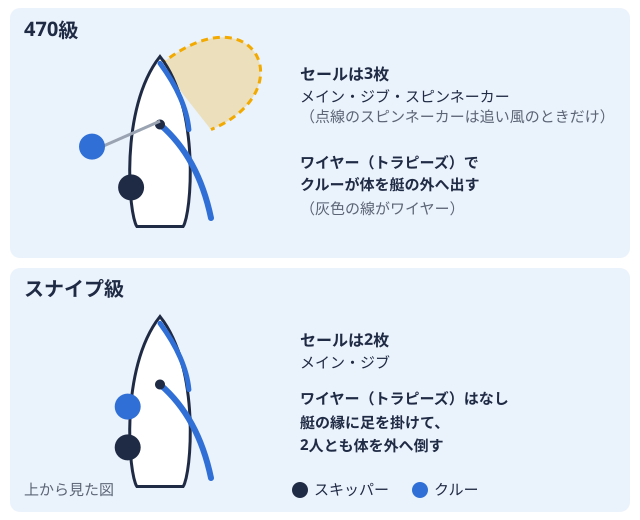
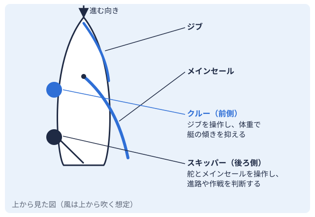

進路 2026-11-06
ヨット日本代表の出身大学｜パリ五輪セーリング代表7人の大学を公式情報で整理
「ヨット 日本代表 大学」と検索する人の多くは、「日本代表の選手はどの大学の出身なのか」「大学ヨット部から五輪を目指せるのか」を知りたいのではないでしょうか。ところが、代表選手の出身大学を一覧にしたページは、本記事の作成時（2026年11月）に確認した範囲では見当たりませんでした。理由の一つは、連盟の公式資料が選手の「所属」として所属企業を載せるのが基本で、出身大学を載せていないことにあります。
そこで本記事では、パリ2024オリンピック（2024年）のセーリング日本代表7人を対象に、日本セーリング連盟（JSAF日本セーリング連盟。国内のセーリング競技を統括する公益財団法人。）の公式報告書で選手と所属を確認したうえで、各大学・JOC・自治体などの公表資料から出身大学を一人ずつ照合しました。確認できた事実だけを載せ、確認できなかった選手は「確認できていません」と明記しています。
この記事の調べ方と範囲
対象は、パリ2024のセーリング日本代表7人です。選手名と種目は、JSAF オリンピック強化委員会の「SAILING TEAM JAPAN Paris2024 オリンピック競技大会報告書」に記載された代表選手一覧によります。出身大学は、次の資料のいずれかに記載があった場合だけ採用しました。
- 大学の公式サイト（早稲田大学 競技スポーツセンターなど）
- JOC（日本オリンピック委員会）の選手ページ
- 自治体が公表した選手プロフィール
- 報道・専門メディアの記事
資料どうしで記載が食い違う場合や、1つの資料でしか確認できない場合は、本文中にその旨を書いています。個人の生年月日や家族などの情報は扱いません。
出身大学の集計はパリ大会の7人に限り、東京2020大会以前の代表や世界選手権の代表は含めていません（東京2020の公式名簿の扱いは後半で触れます）。公表資料が揃った範囲に限った整理であり、歴代の全代表選手の網羅ではありません。
パリ2024のセーリング日本代表7人
JSAFの報告書によると、パリ大会のセーリング日本代表は4種目・7人です。混合470級全長4.7mの2人乗り競技用ヨット。大きな追い風用の帆とワイヤーを使う。 
| 選手 | 種目 | 報告書上の所属 |
|---|---|---|
| 岡田 奎樹 | 470級（スキッパー2人乗りの艇で、後ろ側に座って舵と大きな帆を操作し、進む方向を決める人。  ） | トヨタ自動車東日本 |
| 吉岡 美帆 | 470級（クルー2人乗りの艇で、前側に座って小さな帆などを操作し、体重を使って艇の傾きを抑える人。） | ベネッセホールディングス |
| 富澤 慎 | 男子iQFOiL級 | トヨタ自動車東日本 |
| 田中 美紗樹 | 49erFX級（スキッパー） | 豊田自動織機 |
| 永松 瀬羅 | 49erFX級（クルー） | 豊田自動織機 |
| 飯束 潮吹 | Nacra17級（スキッパー） | エス・ピー・ネットワーク |
| 西田 カピーリア桜良 | Nacra17級（クルー） | エス・ピー・ネットワーク／関西大学 |
報告書で所属に大学名が書かれているのは、西田選手の「関西大学」だけです。ほかの6人は企業名のみで、大学名は載っていません。報告書の最終順位は、49erFX級が20艇中17位、男子iQFOiL級が24艇中18位、Nacra17級が19艇中17位でした。
出身大学を一人ずつ照合した結果
公表資料で出身大学を確認できたのは、7人のうち6人です。
| 選手 | 確認できた大学 | 確認に使った資料 |
|---|---|---|
| 岡田 奎樹 | 早稲田大学（2018年スポーツ科学部卒） | 早稲田大学 競技スポーツセンター |
| 田中 美紗樹 | 早稲田大学（卒業） | JOC選手ページ、BULKHEAD MAGAZINE |
| 永松 瀬羅 | 早稲田大学（卒業） | BULKHEAD MAGAZINE |
| 吉岡 美帆 | 立命館大学（卒業） | JOC選手ページ、BULKHEAD MAGAZINE |
| 富澤 慎 | 関東学院大学 | 神奈川県の選手プロフィール |
| 西田 カピーリア桜良 | 関西大学（在学） | JSAF報告書、報道記事（2024年5月） |
| 飯束 潮吹 | 確認できていません | ― |
飯束選手については、大学名の記載がある資料を今回の調査では見つけられなかったため、空欄にしています。
早稲田大学が3人で最多
確認できた6人のうち、早稲田大学の出身者が岡田選手・田中選手・永松選手の3人です。早稲田大学 競技スポーツセンターのページは、岡田選手を「早稲田大学ヨット部OB」と紹介しています。田中選手と永松選手については、BULKHEAD MAGAZINEが「早稲田大の先輩後輩」と紹介しています。
49erFX級の2人が同じ大学の出身というのは、公表資料から読み取れる範囲の事実です。このことから「早稲田に進めば代表になれる」と言えるわけではありません。出身者が多い理由（練習環境、入部者の競技歴など）は、公表資料からは判断できません。
立命館大学・関東学院大学・関西大学
吉岡選手はJOCのプロフィールで最終学歴が「立命館大学」です。立命館大学は、ヨットマニアに大学ページがあります（立命館大学）。
富澤選手は、神奈川県の選手プロフィールに「最終出身校名 関東学院大学」とあります。別の企業リリースでは、大学でウインドサーフィン部に所属し、1〜3年次に大学選手権（個人）で3連覇したと紹介されています。ウインドサーフィンの大学競技は、ヨットのインカレ大学対抗の全国規模の大会の略称。ヨットでは主に全日本学生ヨット選手権大会を指す。（全日本学生ヨット選手権）とは別の枠組みである点に注意が必要です。関東学院大学の大学ページはこちらです。
西田選手は、報告書に「関西大学」と記載があり、2024年5月の報道でも「関大」と紹介されています。学部や学年は、この報道では確認できませんでした。関西大学は関西水域全国の大学ヨット部を地域ごとに分けた区分。北海道から九州まで全国に9つある。の大学で、ヨットマニアの大学ディレクトリ（関東・近畿北陸のみ）にはまだ大学ページがありません。
「ランキング」にしない理由
「出身大学ランキング」の形にすると、1人の違いで順位が入れ替わり、確認できなかった選手がいる状況では誤解を招きます。そのため本記事では、人数の多い大学を示すにとどめ、順位表は作っていません。
学生ヨットから日本代表への道筋
「大学のインカレで勝てば強化指定を受けられる」といった単純な道筋は、JSAFの公式資料からは確認できません。報告書に書かれている強化の仕組みは、次のとおりです。
- 強化対象の選定では、各種目の世界選手権を認定大会に設定し、一定の結果を残したチームをNT（ナショナルチーム）に認定する
- 世界選手権で10位以内に入ったチームは、NT-A（ナショナルチームエース）に認定する
- 470級の代表選考は、2024年3月の世界選手権（イタリア・サンレモ）を一次選考会、4月のプリンセスソフィア杯（スペイン・パルマ）を二次選考会として実施した
- 国枠の獲得が2024年4月下旬のラストチャンスレガッタにもつれ込んだ種目は、プリンセスソフィア杯を一次選考会、ラストチャンスレガッタを二次選考会とした
つまり、代表に至る道は、国内の学生大会の成績ではなく、世界選手権などの国際大会の結果で決まる仕組みです。学生ヨットは、その舞台に立つまでに競技力と経験を積む場の一つ、という位置づけになります。
報告書は、メダル獲得は「ジュニアヨットクラブ、高校大学等の教育機関、セールメーカー、クラス協会といった関係者の日々の強化活動があっての賜物」と述べています。このほか、西田選手は報告書で「JSAF HOPE育成プログラム出身の若手」と紹介されています。連盟には、大学の部活動とは別に若手を育てるプログラムがあることも分かります。
学生大会での活躍を示す資料としては、田中選手の経歴に「2019年全日本女子インカレ 470級優勝」と記載があります（BULKHEAD MAGAZINE）。ただし、この成績と代表入りの因果関係を示す資料はありません。
参考: 東京2020大会の公式名簿では
JSAFの東京2020応援サイトには、セーリング日本代表として15人が載っています。このページで大学名が書かれているのは、小泉維吹選手（49er級、早稲田大学・在学）、山﨑アンナ選手（49erFX級、ノエビア・日本体育大学）、髙野芹奈選手（49erFX級、ノエビア・関西大学）の3人です。
ほかの12人は、このページに大学名がありません。大学名がないことは、大学に通っていないという意味ではありません。公式名簿が大学名を載せていないため、出身大学の集計には、各大学や報道の個別資料を探す手間がかかります。これが、出身大学の一覧がなかなか見つからない理由の一つだと考えられます。
代表を目指す学生が今できること
公表資料から確認できる範囲で、学生ヨット部員ができる行動は次のとおりです。
- 成績を確認する: 自分の水域の大会成績は成績PDFリンク一覧、日程は大会カレンダーで確認できます
- 水域を知る: 自分の大学がどの水域に属するかは、水域一覧から確認できます
- 大学の強さを知る: 近年のインカレ成績は、大学ヨット部の強豪校を水域別の成績で整理した記事、歴代の優勝校は歴代優勝校ランキングにまとめています
- 艇種を知る: 学生大会の470級とスナイプ級2人乗りの競技用ヨット。追い風用の大きな帆を持たず、ワイヤーも使わない。の違いは、470級とスナイプ級の違いで解説しています
全日本学生ヨット選手権の歴代優勝校集計（ヨットマニア編集部による集計）では、早稲田大学が総合優勝13回で、2020〜2024年は5連覇です。インカレで強い大学の出身者が代表に入っている、というのはあくまで公表資料から読み取れる事実の組み合わせであり、因果を示すものではありません。
情報の更新について
本記事の内容は、2026年11月時点の公表資料によります。次の五輪（ロサンゼルス2028）に向けて代表選考が進むと、代表の顔ぶれと出身大学の傾向は変わります。新しい代表が決まった時点で、本記事も更新する予定です。
出身大学の記載は、本人が公表した範囲に限っています。
まとめ
- パリ2024のセーリング日本代表は4種目・7人で、混合470級が銀メダルでした（JSAF報告書）
- 出身大学を確認できた6人のうち、早稲田大学が3人、立命館大学・関東学院大学・関西大学が各1人です。1人は確認できていません
- JSAFの公式資料は所属企業の記載が中心で、出身大学は選手ごとに別の資料で確認する必要があります
- 強化の仕組みは世界選手権の結果を軸にしており、インカレの成績が強化指定の条件になるとは書かれていません
出典
- JSAF オリンピック強化委員会 SAILING TEAM JAPAN Paris2024 オリンピック競技大会報告書
- JSAF 第33回オリンピック競技大会(Paris2024)代表選手内定について（Mixed Dinghy/470クラス）
- 早稲田大学 競技スポーツセンター（岡田奎樹選手の記事）
- JOC 吉岡 美帆
- JOC 田中 美紗樹
- BULKHEAD MAGAZINE 49erFX 日本選手 田中・永松組紹介
- BULKHEAD MAGAZINE 470 日本選手 岡田・吉岡組紹介
- 神奈川県 パリ2024出場選手プロフィール（富澤慎選手）
- 柳屋本店 富澤慎選手とのスポンサー契約リリース
- デイリースポーツ 関大・西田カピーリア桜良選手の記事（2024年5月25日）
- JSAF 東京2020 セーリング日本代表
PR
この部活・競技を応援したい方へ
体育会学生を支援するプラットフォーム「ツナカレ」で、応援できる部活を探せます。
PR
取材してほしい部活を募集中
あなたの部活・大会を取材してほしい方はこちらからご依頼ください。
オフシーズン・引退後に、長期インターンという選択
部活で培った力を実務で試す。16タイプ診断（30秒）で合う企業がわかります。